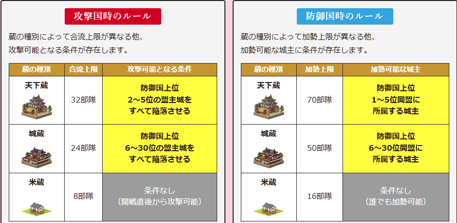
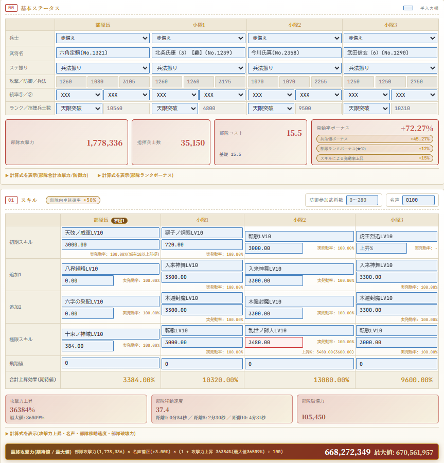
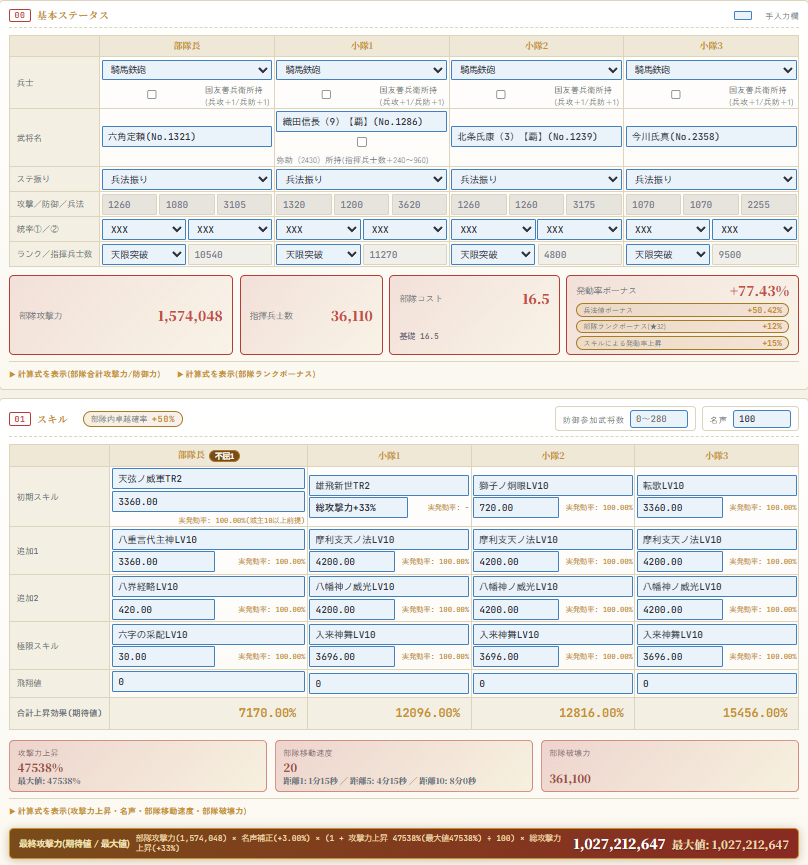
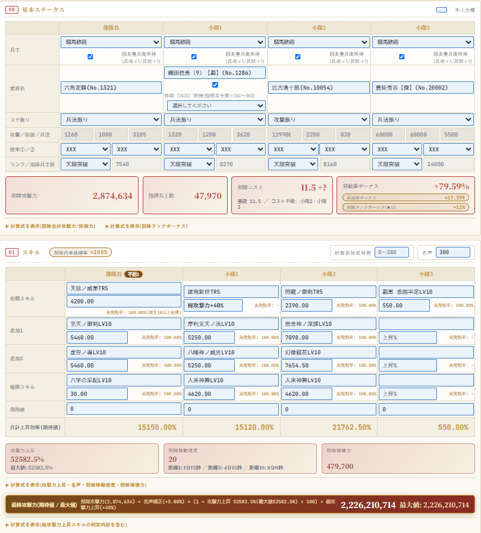

六角定頼は無課金の星になれるか？
32章の新天・六角定頼の模倣部隊を、攻撃シミュレーターで3パターン検証しました。
32章が始まって、すでに数日経過。
いろんなところで新天の考察が進んでいますが、私は六角定頼模倣部隊について検証していきます。

| 項目 | 内容 |
|---|---|
| 初期スキル | 天弦ノ威軍(S) |
| 対象兵科 | 弓・馬・焙・騎 不屈1 |
| 発動確率 | 45% |
| 攻撃上昇 | 1000%上昇(LV10) 自軍城主数10以上で3倍 |
| 鍛錬(TR1〜TR5) | 1060% ／ 1120% ／ 1200% ／ 1300% ／ 1400% |
| コスト／指揮兵数 | 5.5 ／ 5340(★0-0) |
| 統率 | 槍A ／ 弓S ／ 馬S ／ 器A |
効果を見る限り盟主戦のイメージがつきやすいですが、少数精鋭系の小規模同盟や影武者狩り、32章から追加された蔵攻撃にも有用です。

じゃあどれくらいやれるのかを検証してみました。
このサイトのシミュレーターを使用して検証してみました
無課金であまりやっていない人が目指したいライン

6.7億
天限突破は難易度高いかもしれませんが、六角定頼を部隊長にして模倣するだけ。
赤備えなので合戦前にタダでもらえますし、生産も比較的容易です。
上記条件で武田と六角のTRを2に上げれば8億弱出る計算です。
天を大量に溶かして2.5倍枠に人数系スキルをつけていたころと比べて手間も楽だし、人によってはこっちの方が火力出るっていう。
新規鯖や新規でやってみたい人には作りやすくてよさそうです。
遁世影武者ではダメなのか？という人もいると思いますが、三十五ノ兵法LV10がどれだけ猛威を振るうか分からないので今回シミュレーションではBランクスキルは除外しています。
めざせ10億

合成イベントを駆使したら何とか達成できるライン
弥助無し、国友善兵衛なし、TR2までの条件なのでそこまでハードルは高くありません。なお現在このシミュレーターには陣補正を入れていないので実際にはもう少し火力はでます。
ランカーの集まりには参加するのは難しいかもしれませんが、それ以外ならば十分やれるレベル。これくらいの火力で集まれば10人くらいの少数精鋭系同盟を十分落とせそうです。
廃課金向け 一例

適当に模倣して傑ぶち込んだだけの部隊。
傑取得やTR5まで上げるのは苦労しますが、作成難易度はほかの20億部隊に比べたら格段に難易度が低い。
このシミュレーターはまだTR6やXスキルに対応しきれていないので検証できませんが雷轟滅星とかつけたら1部隊で100億とか出るんじゃないかな？
対応させたら検証してみます。
結論：無課金の星になれるどころか、環境を荒らす可能性が見える
でした。